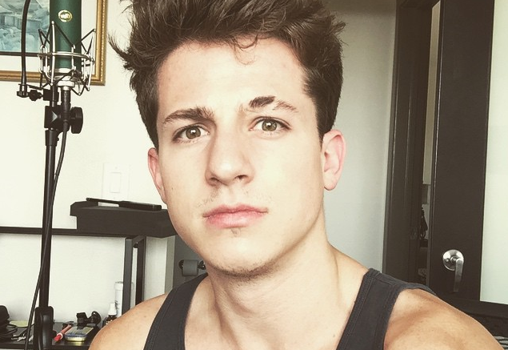
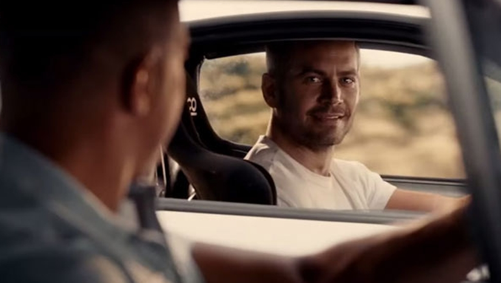
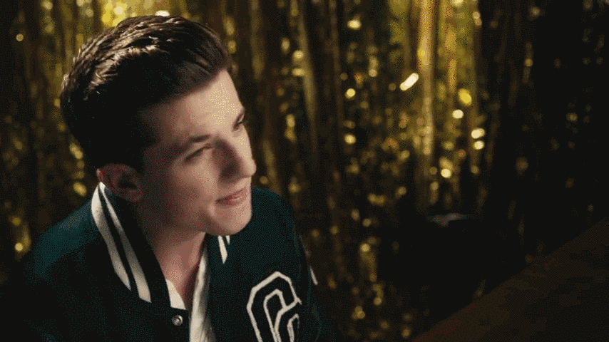
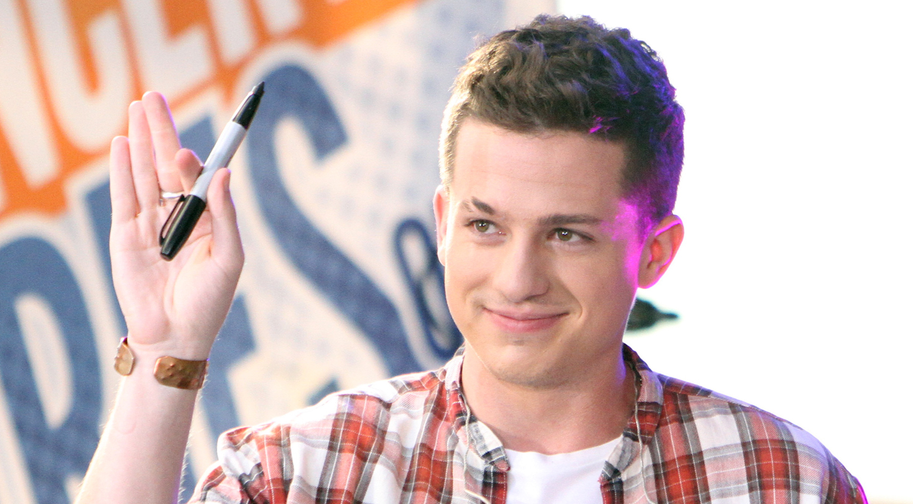
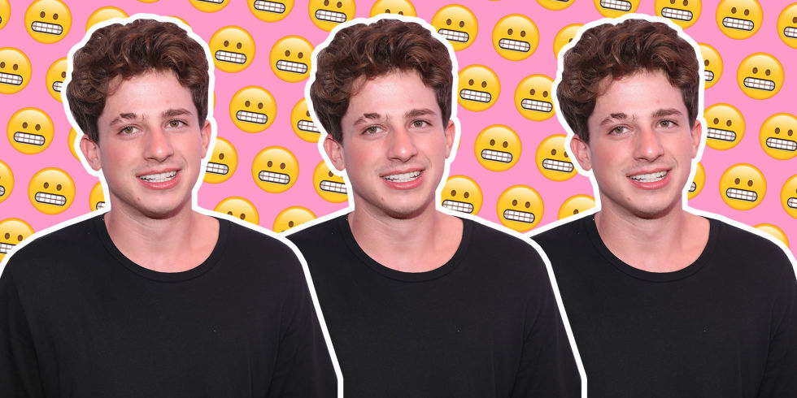
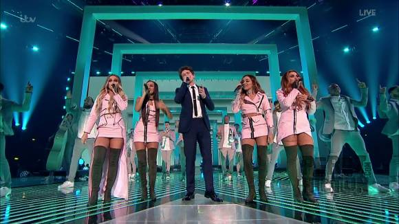
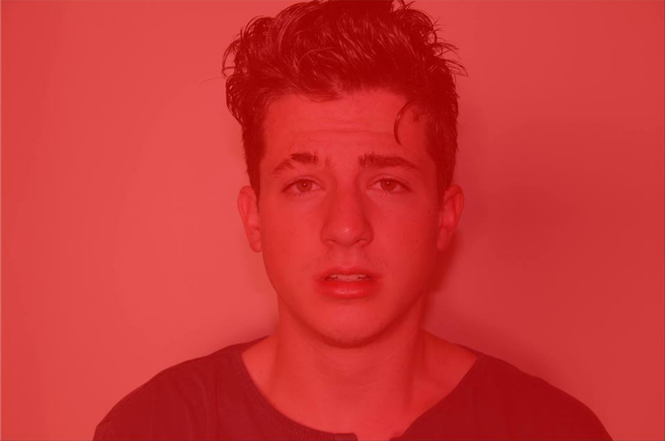

小查尔斯·奥托·普斯（英语：Charles Otto Puth Jr.）是一位美国流行歌手，出生于美国新泽西州。2009年创建YouTube频道，上传翻唱视频并拥有一定的知名度。2011年凭借与Emily Luther翻唱的《Someone Like You》获得艾伦赏识。 2015年，凭借与Meghan Trainor合作的《Marvin Gaye》被大家所知。

他的母亲是一位钢琴老师。他4岁时就开始教他学习钢琴，10岁时开始学习爵士乐；12岁的他在父亲的支持下录制了一张圣诞音乐唱片并挨家挨户售卖给邻居们，赚取的600美元捐赠给了当地教堂；高中时期，他每周六去往隔壁的纽约曼哈顿音乐学校学习古典爵士 。
查理右边的眉毛有道疤痕，据他自己透露，这道疤痕在他两岁时被一只黑色拉布拉多犬咬伤而留下。这也是他被粉丝们叫做“断眉”的原因。
每次一说到断眉小哥，第一映像就是当初唱《速度与激情7》的英俊小伙子，当时速7结尾的时候，片尾一首《See you again》无尽柔软，伴随保罗永恒定格的画面令无数观影者潸然泪下。

“断眉小哥”一个从翻唱歌手到原创歌手再到成为热门电影《速度与激情7》主题曲的演唱者，他的首支单曲曾创下超过13亿次YOUTUBE点击量。听说他创作《See you again》仅仅只用了11分05秒，这种又高产又高质量的查理你值得拥有。

2015年2月发布出道首单《Marvin Gaye》 。Charlie表示，在自己整个童年青年时期，钢琴与爵士乐都是接受科班学习，甚至以流行音乐的启发与激励，并从此走上职业道路。
他希望Marvin Gaye这为将来会成为一名爵士钢琴家，正是Barry White，Marvin Gaye，Max Martin等人的音乐带给自己关于首歌能带给大家一种勇气和推力，“我希望像我这种很害羞的人能够听听这首歌，然后有勇气给自己喜欢的女孩表白，勇敢表达自己的感受。”

当已缔造许多亮眼成绩的查理，终于在全球瞩目期待之下于2016年1月29日正式发行首张录音室专辑《Nine Track Mind》，查理除自行担任专辑制作人之外，也邀请到重量级的幕后制作卡司联合倾力打造！
专辑《Nine Track Mind》结合多元化曲风，无论是流行、R&B、摇滚、灵魂乐、Doo-Wop曲风都是查理的创作领域。专辑所收录的歌曲最初的雏形都是在他卧室中制作完成，写的都是查理的自身经历。那时未曝光的他，有着自己的真实个性，不管是写歌还是做人，他都特别讨人喜欢。

一首写给远方朋友的《One Call Away》；一首流行歌曲王牌制作人J.R. Rotem操刀制作，旋律磅礡、编曲层次安排细致的《Dangerously》；当压力大到快将自己淹没、与自我对话的《Losing My Mind》；更特别邀请到好友，新世代天后Selena Gomez的《We Don’t Talk Anymore》。
2016年11月Charlie Puth&Michael Caren&Jacob Luttrell 联手演唱一首《Oops》欢快俏皮口哨，慵懒性感女声。曾有人说这是一首能治愈伤痛的歌曲。
英国少女团体Little Mix，她们因打破传统成为英国人气歌唱比赛The X Factor史上第一个夺冠的团体而成名，她们是自2005年以来第一个不用在The X Factor上表演就能够首单空降英国单曲榜的冠军。

2017年4月，CharliePuth强势回归新专辑《Attention》一开口就被性感的嗓音征服，曲风动感十足。和萌德（Shawn Mendes）一前一后发歌，单封还一蓝一红，网上小伙伴都在调侃，他们俩确定不合作一曲吗？

我喜欢查理的原因，是他乐观的背后不知付出了多少别人想不到的艰辛。他从之前的默默无闻到现在的大放异彩，依旧坚持着他对音乐的远大理想！他写着深情又节奏感强劲的旋律，同时又具备流行音乐感。
他希望能够鼓励所有还在为自己音乐之路而努力的音乐人，因为他的坚定，今天他的原创音乐才得以被无数人所听见，唯有不断努力，你的优质音乐才能都被看见。


推荐专题 FEATURES
艺人采访 INTERVIEW
 WE MEET YOU 第三十期丨前奏响起，遇见达西
WE MEET YOU 第三十期丨前奏响起，遇见达西
 WE MEET YOU 第二十九期 | 陈奕迅：爱的见解
WE MEET YOU 第二十九期 | 陈奕迅：爱的见解
 WE MEET YOU 第二十八期 | 鞠起：南开学霸无法停止的音乐梦
WE MEET YOU 第二十八期 | 鞠起：南开学霸无法停止的音乐梦